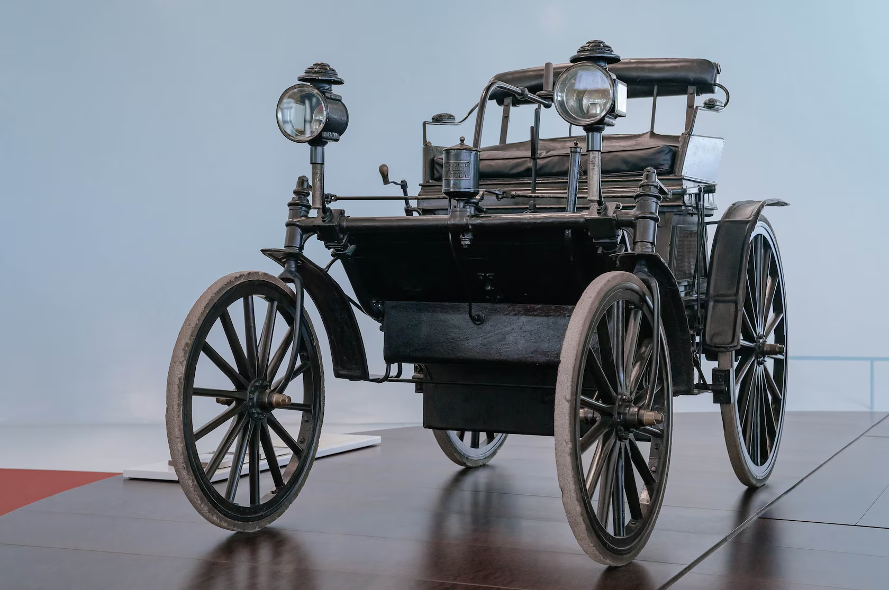

At the end of the 19th century, the time was ripe for a revolutionary, innovative mobility technology – the automobile. It was not being developed by a large industrial company, but by two visionaries from south-west Germany: Carl Benz in Mannheim and Gottlieb Daimler in Cannstatt near Stuttgart. They didn't know each other personally and worked independently of each other. What is amazing is that they nonetheless successfully realised their dreams of new individual mobility with the combustion engine in the same year. Benz invented the automobile, receiving a patent for the three-wheeled "vehicle with gas engine drive" on 29 January 1886. Also in 1886, Gottlieb Daimler installed the four-stroke engine he had developed together with Wilhelm Maybach in the motorised carriage. This is how the first four-wheeled automobile was created. The new technology proved its worth – which was not easy, because at that time there were neither efficient motorways nor a network of filling stations. Bertha Benz, Carl's wife, confidently demonstrated the usefulness of the automobile as early as 1888: She undertook a widely acclaimed long-distance journey from Mannheim to Pforzheim in the Patent-Motorwagen. This was a key moment in the establishment of the car as a means of transport.
